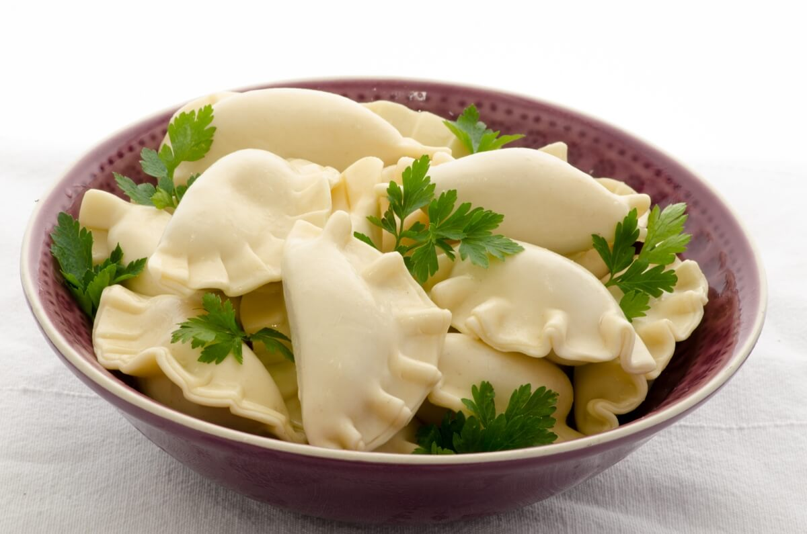

Varenyky

Description
I bet you’ve heard about varenyky, whose motherland is Ukraine. If not, I envy you as you still have your first
taste to savor.
These wonderful dumplings, with all kinds of fillings, are gently covered with sour cream and they just melt in
your mouth.
There are all kinds of filling:
- sauerkraut, potatoes, buckwheat + cottage cheese, potato + mushrooms
- cottage cheese, sour cottage cheese
- sugared cherries, blueberries, rhubarb, and plenty more.
The preference depends on the region and family traditions.
Ingredients:
- 6 (1.5 lb) cups flour
- 8 oz sour cream
- ¼ lb butter
- ¾ (6 oz) cup milk
- 1 tsp salt
- 4 eggs
- 1 medium onion
- ¾ (3.5 oz) cup butter
- 3 (22 oz) cups potatoes mashed
- ½ tsp salt
- ¼ tsp pepper
Steps:
- Sauté the onions in butter and set aside to be added after the varenyky are cooked.
- Peel the potatoes and boil until soft. Mash the potatoes, add salt, pepper, and butter.
- Mash well and set aside to cool. It must be cooled thoroughly before placing on the dough circles.
- Warm the milk. Mix in the melted butter and sour cream.
- Beat the eggs with a fork and blend the mixture into the flour and salt. Knead until firm. Divide the dough
in half.
- Roll the dough out thinly on a floured board.
- Cut out circles with a cutter (or a glass). Place a spoonful of filling in the center.
- Flour your fingertips and fold the edge over. Press the edges together with your fingers to seal them
tightly.
- Drop the folded varenyky into salted boiling water.
- Cook for 3 to 5 minutes until they are well puffed and float. Remove the varenyky with a slotted spoon.
- Place the varenyky in a large bowl and toss gently with a piece of butter.
- Serve right away with a spoonful of sour cream. Alternatively, top them with lots of onion fried in
sunflower oil.
Back to all recipes